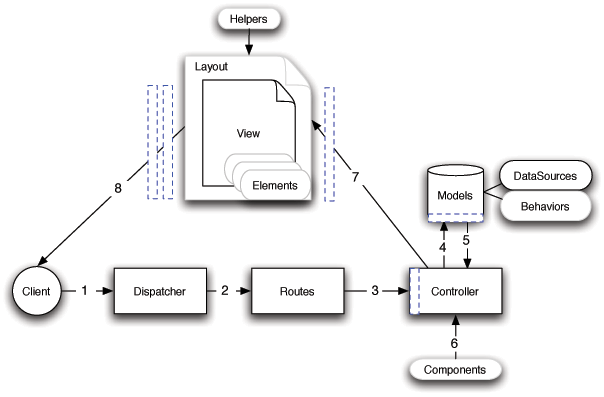

Improve this Doc
典型的 CakePHP 请求¶
既然我们已经了解了 CakePHP 的基本要素，就让我们看看各个对象如何协作，共同完成一个基本的请求。继续我们之前关于请求的例子，想象一下我们的朋友 Ricardo 刚刚在 CakePHP 应用的首页上点击了“立刻买一个定制蛋糕！”这个链接。

一个典型的 CakePHP 请求的流程图
Figure: 2. 典型的 CakePHP 请求。
黑色 = 必备元素，灰色 = 可选元素，蓝色 = 回调函数
- Ricardo 点击了指向 http://www.example.com/cakes/buy 的链接，然后他的浏览器向 web 服务器发起一个请求(request)。
- 路由解析这个网址(URL)，以获得该请求的参数：控制器(controller)、动作(action)和其它在这次请求中影响到业务逻辑的参数。
- 使用路由(route)，请求的网址被映射到一个控制器动作(某个控制器类的一个方法)。在本例中，这是 CakesController 控制器的 buy() 方法。此控制器的 beforeFilter 回调方法先被调用，然后才执行控制器动作中的逻辑。
- 控制器可能会使用模型(model)获取应用程序的数据。本例中，控制器调用模型从数据库中获取 Ricardo 之前的订单。 任何涉及的模型回调(callback)、行为(behavior)和数据源(DataSource)将在此操作中调用。虽然模型不是必须的，但所有的 CakePHP 控制器最初至少要包含一个模型。
- 当模型得到数据后，就将其返回给控制器。模型的回调方法会被调用。
- 控制器可能会调用组件(component)以进一步完善数据或执行其它操作(例如，处理会话、验证用户、或者发送电子邮件)。
- 一旦控制器使用模型和组件准备好数据，就用控制器的 set() 方法把数据传送到视图(view)。在发送数据前，控制器的回调方法会被调用。视图逻辑会被执行，这可能包括使用元素(element)以及/或者助件(helper)。缺省情况下，视图会在一个布局(layout)里被渲染。
- 其它的控制器回调函数(例如 afterFilter)会被调用。完整的、经过渲染的视图代码被传送到 Ricardo 的浏览器。